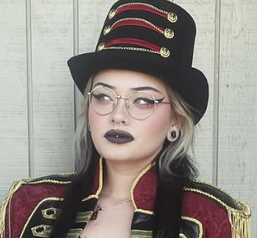

THE INTERVIEW
My name is Hope. I don't really believe in subscribing to a profession or hobby to describe myself, but I enjoy creating art, doing yoga, aerial, and gardening. I would consider that my life is best described as organized chaos, and I enjoy various experiences.
2. What drew you to painting?Like most, painting is my way of processing experiences in the world. Writing does this, but a direct visual is at times a more visceral approach. It’s tactile and immediate. I love the way colours convey an emotion that words may leave open to interpretation. There is a lot of love in the raw, unfiltered feeling of a moment.
3. How does photography fit into your creative life?Photography is my documentation of reality. Photographs often capture what we see with our own eyes, but you can also capture images in such a way that reveal more than what’s on the surface.
4. What are you reading right now?I’m currently rereading Interview with the Vampire. I've finished the TV series, and I felt it'd be a good idea to pick it up again. It's fun to find the areas where an adaptation differs from the source material. I love Anne Rice, but I really do believe that the AMC series enhanced the character.
5. Why gardening? It seems far from the gallery.Gardening was a hobby that came from a job opportunity. It started as a means to survive, but now it’s my grounding practice. It’s slow, patient, and deeply connected to the earth. It shows that beauty takes time and care, and it gives me the mental space to recharge for my more intense creative work. I also get a decent workout from it.
6. What does “art” mean to you in the broader sense?That’s a loaded question. Art, to me, is any act that challenges, comforts, or reveals a person’s intention through means of creation. Art is in the way we live, the way we question, and the way we build a community.
7. I know that you are an outspoken feminist. How does it influence your creative work?It’s the lens through which I see everything. Unlike how most of us were raised, the reality is that life does not revolve around patriarchy. I ask the questions: Who is represented? What is the narrative, and who benefits from it? My art is an attempt to reclaim space, challenge stereotypes, deconstruct skewed ideologies, and celebrate diverse perspectives in both subject and style.
8. What’s your favourite part of the creative process?Brainstorming is exciting, but I love the struggle of figuring out how to make that vision happen. I suppose the act of translating thought into action and what medium I will use.
9. How do you stay inspired?As strange as it may sound, staying busy. I read widely, I walk in nature, I talk to people, and I pay attention to the small details. Inspiration is everywhere. The more you do, the more you'll find.
10. What’s one thing you want people to take away from your work?I want people to feel seen. Whether they’re looking at a painting, a photo, or reading my words, I hope they feel a sense of connection and are reminded that their own stories and perspectives are valid and powerful.